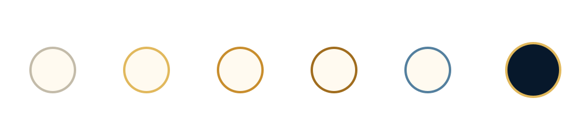

Tour par tour
Une requête, une réponse. Aucun mandat persistant; aucune mémoire institutionnelle implicite.

La Maison phare
La couche constitutionnelle entre l’intelligence de frontière et l’autorité conséquente. L’IA produit des sorties. GoalOS détermine qui peut agir, ce qui doit être prouvé, qui peut accepter et ce que l’institution peut mémoriser.
40 dossiers · une architectureL’IA crée des sorties. GoalOS détermine qui peut agir, quelle preuve est requise, qui peut contester le résultat, qui peut l’accepter et ce que l’institution a le droit de mémoriser.
L’IA produit des sorties. GoalOS détermine qui peut agir, quelles preuves sont exigées, qui peut contester le résultat, qui peut l’accepter et ce que l’institution est autorisée à mémoriser.
Les boucles opératoires de l’intelligence autonome
L’IA progresse du tour par tour vers les objectifs, la continuité temporelle et l’initiative proactive. GoalOS ajoute l’évaluation, la mémoire, la gouvernance et la preuve requises avant que cette persistance reçoive une autorité.
Une requête, une réponse. Aucun mandat persistant; aucune mémoire institutionnelle implicite.
La mission persiste, mais l’autorité, les critères d’acceptation et les limites doivent être constitués.
L’institution observe les changements, réévalue la preuve et préserve pause, révocation et retour arrière.
GoalOS peut découvrir une incertitude coûteuse; il ne transforme pas la capacité en permission sans consentement et autorité légitime.

Chaque résultat conséquent progresse à travers des états visibles. Une réponse éloquente ne devient jamais mémoire institutionnelle simplement parce qu’elle paraît complète.
Tout résultat conséquent progresse par des états visibles. Une réponse fluide ne peut jamais devenir mémoire institutionnelle simplement parce qu’elle semble complète.
Ingénierie de graphes gouvernée par la preuve
GoalOS demande quel graphe de travail, preuve, autorité, mémoire, ressources et règlement mérite d’exister — pas seulement ce que le prochain agent doit faire.
Les relations de données, preuve, autorité, ressources, gouvernance et règlement portent un sens déclaré.
Les branches indépendantes demeurent séparables jusqu’à ce que la preuve justifie leur combinaison.
Les assertions matérielles sont contestées hors du contexte d’exécution qui les a produites.
Tests, mesures et acceptation responsable ne peuvent être optimisés hors de l’existence.
Une sortie réussie n’est pas automatiquement mémoire. Droits, portée, version et révocation restent explicites.
Une génération ultérieure doit mieux performer sur une mission nouvelle à contraintes égales ou plus strictes.
Boucle de valeur et recalcul
GoalOS relie la découverte de demande, la constitution commerciale, la livraison productrice de preuve, la mémoire gouvernée et une prévision qui doit être recalculée lorsque le régime change.
Une architecture commerciale falsifiable pour attirer, vendre, livrer, prouver, renouveler et réinvestir.
Ouvrir →Comparer le rythme actuel aux 6–12 mois précédents, tester plusieurs modèles et fixer un point de recalcul daté.
Ouvrir →Relier les assertions permanentes aux contrats, dépôts, racines ENS, chronologie et documents réellement fournis.
Ouvrir →
Le plan de contrôle récurrent
Bureau Ω observe le changement, gouverne la réponse bornée, exige la preuve, reconstitue l’institution et ne compose que ce qui demeure valide.
Le premier cycle GoalOS payé par une institution externe, contesté indépendamment, accepté par le client et capable de se composer. La catégorie sera gagnée par la preuve — non déclarée par annonce.
Ne jamais promouvoir l’architecture plus fort que la preuve. Tant que ces portes ne sont pas franchies, le statut public demeure « mise en commission ».
GoalOS dans l’orchestration souveraine
Il convertit la demande en objectif autorisé, fige le fardeau de preuve et les critères d’acceptation, coordonne l’exécution bornée et détermine ce qui peut passer vers la preuve, la mémoire et un cycle successeur.
Gravité institutionnelle
Les modèles et partenaires peuvent changer. La Constitution de mission GoalOS préserve l’objectif, l’autorité, la preuve, les paramètres économiques et le retour arrière afin que l’exécution reste alignée à l’institution.